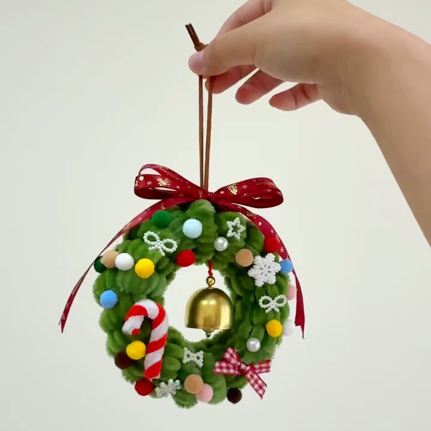

FENNY STUDIO 🎄 手作教學
免膠繽紛聖誕花環
毛根 DIY 教學
花環主體不用熱熔膠，九個步驟跟著影片做，新手和小朋友都能做 🤍

動手做
🎄 免膠繽紛聖誕花環｜製作步驟
往下滑，一步一步跟著做。影片點一下就會播放。
材料
1 繞白圈
2 長線
3 彈簧
4 穿串
5 繞花環
6 鈴鐺
7 掛環
8 裝飾
9 蝴蝶結
備
🧺 準備材料
綠色毛根
約半捆
白色塑膠圈
1 個
鉛筆
捲彈簧用
鈴鐺
1 個
皮革繩
1 條
緞帶
1 條
小裝飾
毛球、小蝴蝶結、雪花等
手工膠或保麗龍膠
貼裝飾用
1
🟢 毛根繞滿白圈
毛根頭勾住白色塑膠圈，尾端扭緊固定。
一圈一圈緊密地繞，不要留縫。
一根繞完，跟下一根的尾端扭在一起，接著繼續繞。
繞到最後一段，跟起頭轉圈打一個結，就固定了。
2
🧵 扭上一根長線
在打結的地方勾上一根毛根，扭緊固定。
讓它豎起來，這根就是等一下穿彈簧的長線。
💡 小提醒：毛根先留 2 根，當穿彈簧的長線。
3
🌀 捲小彈簧
一根毛根靠著鉛筆（直徑約 0.6～0.7 公分），一圈一圈繞。
整根務必稍微用力緊密繞完，往中間推緊壓縮這樣會更緊密好看，再從筆上抽出來。
總共做 30～35 個小彈簧。
4
🔗 彈簧穿成長串
把小彈簧套進長線，往下推到底。
一個接一個穿，穿成一長串。
5
🎄 繞成蓬蓬花環
彈簧串穿過圓圈中間，一圈一圈繞過去。
每繞一圈就往前推緊，花環會慢慢變蓬。
長線不夠就再接一根、兩根扭在一起；彈簧用完再穿一些上去，繼續繞。
圈圈盡量推緊密，會比較扎實漂亮。最後尾巴在上方扭緊，整理一下形狀。
💡 小提醒：上方的尾巴先留著，等一下要綁掛繩。
6
🔔 掛上鈴鐺
鈴鐺放進花環中間，跟中間的毛根一起交叉、扭緊固定。
上面再綁一個結，綁緊鈴鐺才不會掉，剪掉多的線。
💡 小提醒：擔心鈴鐺不牢固，可以塗一點熱熔膠固定。
7
🤎 綁上皮繩掛環
皮革繩兩端打一個結，拉緊。
把皮繩穿進上方的毛根，用毛根尾巴繞過去把皮繩綁住。
尾端塞進去藏好，再把皮繩拉緊。
💡 小提醒：擔心掛繩不牢固，可以塗一點熱熔膠固定。
8
✨ 放上裝飾
裝飾一個一個貼上去，顏色和位置照自己喜歡的搭配。
💡 小秘訣：裝飾背面點手工膠，用保麗龍膠也可以。
9
🎀 綁緞帶蝴蝶結
緞帶繞過花環上方，打一個蝴蝶結。
塗上一點膠，直接貼在花環上。
整理蝴蝶結的形狀、把尾巴順一順，完成！
🎁 做好了嗎？掛在牆上、門把上，或裝進禮物袋送人都很可愛。拍張照標記 @fenny.studio，讓芬妮看看你的花環！